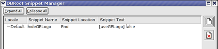

Before you use many of the Fusion configuration tools, you must stop the system manager and then start it after you change the configuration. To stop/start the system manager, enter:
/etc/init.d/gefusion [stop | start | restart]The Google Earth Enterprise installation script prompts you to enter information about your system and then properly configures your primary asset root and source volume. After you install Fusion, use the geconfigureassetroot command to:
If you use the Google Earth Enterprise Fusion Tutorial, Google recommends that you specify separate asset roots for each user’s tutorial data and a completely different asset root for your real working data.
You must identify each directory that contains your source data files (or subdirectories of your source data files). Fusion is not able to read files located in other directories.
You can modify volume definitions when migrating from a single- to a multiple-workstation configuration or when modifying the local path of a network-mounted source volume (for example, when adding a larger drive for source data).
For more information on these commands, see geconfigureassetroot in the Command Reference chapter.
Caution: Do not modify the volume definition after you save data to that volume. Because the local name and the network path definitions are used by Fusion for resources, projects, and database definitions, any change to a volume definition invalidates the data already processed on that volume.
If you add multiple asset roots, you can use the geselectassetroot to specify the volume in which you want to work and to switch back and forth among the available asset roots, if desired. For more information on these commands, see geselectassetroot in the Command Reference chapter.
If you want to customize certain aspects of the Fusion GUI (such as menus, button labels, tables, lists, and so on), you can use a graphical configuration tool called Qt Configuration to customize the font size and other GUI features.
qtconfig.
The Qt Configuration dialog appears.

Note: The Qt Configuration tool is not a Google product. For more information about Qt Configuration, select either of the options on the Help menu.
Fusion provides the Sans regular font for map vector labels. If you want to let users create labels in additional fonts, you can define a "font list" file so that the Text Style dialog displays a list of the fonts you support. For example, you can display international fonts such as Chinese, Japanese, or Hebrew character fonts. (For more information about the Text Style dialog, see the Google Earth Enterprise Fusion Reference Guide.)
/opt/google/share/fonts/fontlist.
TimesRoman). No spaces are allowed in the font face name. Multiple variations of the font, such as regular, bold, italic, are automatically grouped under the same name in the drop-down list.
.ttf) font file. No spaces are allowed in this path.For example, your font list file might contain:
LucidaBrightDemi /usr/local/lib/fonts/LucidaBrightDemiBold.ttf 1 0
LucidaBrightDemi /usr/local/lib/fonts/LucidaBrightDemiItalic.ttf 0 1
LucidaBright /usr/local/lib/fonts/LucidaBrightItalic.ttf 0 1
LucidaBright /usr/local/lib/fonts/LucidaBrightRegular.ttf 0 0
LucidaSansDemi /usr/local/lib/fonts/LucidaSansDemiBold.ttf 1 0
LucidaSans /usr/local/lib/fonts/LucidaSansRegular.ttf 0 0
LucidaTypewriter /usr/local/lib/fonts/LucidaTypewriterBold.ttf 1 0
LucidaTypewriter /usr/local/lib/fonts/LucidaTypewriterRegular.ttf 0 0
LucidaTypewriter /usr/local/lib/oblique-fonts/LucidaTypewriterBoldOblique.ttf 1 1
LucidaSansDemi /usr/local/lib/oblique-fonts/LucidaSansDemiOblique.ttf 0 1
LucidaSans /usr/local/lib/oblique-fonts/LucidaSansOblique.ttf 0 1
LucidaTypewriter /usr/local/lib/oblique-fonts/LucidaTypewriterOblique.ttf 0 1Google used the Google Maps API to create a sample web application that provides a very basic way to display your Google Maps database output in a browser. The sample web application and the Google Maps API are automatically installed with Fusion.
Google recommends that you use the sample application to display your Google Maps data at first. After you see how it looks, you can create your own Google Maps web application that looks more your other web applications, using the provided sample web application as a guide. Documentation for the Google Maps API is at http://www.google.com/apis/maps/.
To get started, make a copy of the sample application files (maps_local.html, maps_google.html,
fusionmaps.js,
and fusionmaps.css). Then configure a virtual server on which you
can experiment, and move the copied files to that virtual server. (See Configuring
Virtual Servers for help, if you need it.) When you create the
Apache configuration file for the new virtual server, change “/maps/maps_google.html”
or "/maps/maps_local.html" in the following
line to point to your copy of the example files on
the new virtual server:
RewriteRule ^/default_map/+$ /maps/maps_google.html [PT]
or
RewriteRule ^/default_map/+$ /maps/maps_local.html [PT]
You can edit the rest of the sample application in whatever ways you like, adding your own logo, branding, and so on.
Google Maps supports only specific browser/operating system combinations. Even if you are using a supported browser, there are some features in Fusion that are not supported by some browsers on certain operating systems. (See Google Maps Browser Support and Incompatibilities in the Google Earth Enterprise Fusion Reference Guide.)
As long as you are connected to the Internet and have a license key for the Google Maps API, there is no problem (regardless of your platform), since your server contacts Google’s servers for functions that are not supported in the browser.
Note: The following procedure assumes that you have received an email from Google that contains your license key for the Google Maps API.
/opt/google/gehttpd/htdocs/maps/maps_google.html. <script src="http://maps.google.com/maps?file=api&v=2&key=abcdefg"type="text/javascript"></script>key placeholder ('abcdefg') with your
Google Maps API license key. Your key is contained in an email sent from Google.maps_google.html file. sudo /etc/init.d/geserver restartThe dbRoot is a file that contains information that Fusion passes to Google Earth EC when you publish a database. The dbRoot Snippet Manager allows you to add your preferences to the dbRoot. Many of these preferences (or snippets) apply to display characteristics, such as showing or hiding the Google logo in Google Earth EC. The snippets you specify in the dbRoot Snippet Manager apply to all databases you publish from Fusion.
Caution: If you are working with multiple Fusion users on multiple workstations, it is important to remember that all managers on the Tools menu can be accessed by all users at the same time. If multiple users are working with the same manager at the same time, when one user closes the manager, that user’s changes overwrite all previous data for that manager. So if you are working in a multi-user environment, be sure to coordinate with the other users to be sure that only one user has this manager open at a time.
[snippetName] value

The following table lists the syntax for all of the possible dbRoot snippets.
| Snippet Name | Purpose | Syntax - Default Value | Notes |
|---|---|---|---|
| userGuideURL | Help menu > User Guide | ../userguide/v4/userGuideURL
|
Defaults to local PDF file for Google Earth EC. Can be set to an internal IP or hostname address. |
| supportCenterURL | Help menu > Support Center | ../userguide/v4/support
|
Hidden in Google Earth EC if dbRoot setting does not exist. Can be set to an internal IP or hostname address. |
| tutorialGuideURL | Help menu > Tutorial | ../userguide/v4/tutorials/index.htm
|
Can be set to an internal IP or hostname address. |
| keyboardShortcutURL | Help menu > Keyboard shortcuts link | ../userguide/v4/ug_keyboard.html
|
Can be set to an internal IP or hostname address. |
| defaultWebPageURL | Tools menu > Web browser home page | http://www.google.com
|
Can be set to an internal IP or hostname address. |
| useGELogo | Shows/hides Google Earth logo in lower right corner of display | boolean | Default is true. |
| bbsServer.host | Host name | string | bbs.keyhole.com |
| bbsServer.port | Port | int | 80 |
| bbsServer. fileSubmitPath |
URL to post KMZ content to | string | /ubb/postbouncer.php |
bbsServer. |
URL where posting wizard is located | string | /ubb/postcatcher.php |
| bbsServer.timeout | Timeout in seconds | double | 15.0 |
| bbsServer.retries | Number of retries before failing | int | 2 |
| bbsServer.secureSS | true = use HTTPS connection to hostfalse = use HTTP connection | boolean | Default is false. |
| cobrandInfo | Custom co-branded logo |
|
|
| earthIntlURL | Localize international URL for Google Earth | http://earth.google.com/intl/%1/
|
|
| supportAnswerIntlURL | Localize international URL for support answers |
|
|
| supportTopicIntlURL | Localize international URL for support topics | http://earth.google.com/support/ |
|
| supportRequestIntlURL | Localize international URL for support requests | http://earth.google.com/support/
|
|
| startupTipsURL | Localize international URL for startup tips |
|
|
| userGuideIntlURL | Localize international URL for documentation | http://earth.google.com/intl/%1/
|
|
| supportCenterIntlURL | Localize international URL for the support center | http://earth.google.com/support/?hl=%1
|
|
| businessListingIntlURL | Localize international URL for business listings | http://www.google.com/local/
|
|
| defaultWebPageIntlURL | Localize international URL for the default web page |
http://www.google.com/intl/%1 (all other languages)
|
|
| numStartupTips | Set the number of startup tips | 13
|
|
| hideUserData | true = Suppress user name and license key information in the Help -> About windowfalse = Display user name and license key information | boolean | Default is false. |
| export.options. disableDiskCache |
true = Disable disk caching, so databases can ask Google Earth EC not to use disk cache at all.false = Enable disk caching. | boolean | Default is false. |
| reverseGeocodingServer... | Defines the reverse geocoding server. | The default uses Google's geocoding server:
[googleMFEReverseGeocoder] http://maps.google.com/ maps/api/earth/ GeocodeService.Search [reverseGeocodingServerVersion] 3 [reverseGeocodingServer.host] geo.keyhole.com [reverseGeocodingServer.path] /maps To use your own geocoding server: [reverseGeocodingServerVersion] 2 [reverseGeocodingServer.host] your_geocoding_server [reverseGeocodingServer.path] /path_for_queries |
Note: Advanced users of previous versions of Fusion were able to hand edit the dbRoot preamble. That is no longer possible. Most of the hand edits that users made in the past are now features built in to Fusion (such as the Search Tab Manager), and other changes are possible using the dbRoot Snippet Manager. However, there are some edits that advanced users made in dbRoot in previous versions of the software that are no longer allowed at all, including:
If you have any questions about these functions, please contact Google Earth Enterprise Fusion technical support.
This field toggles between the values End and Beginning to move the snippet to the end or beginning of the dbRoot. This setting is useful when you want to change the order in which the layers appear in Google Earth EC by reordering them in dbRoot.
Note: If you modify a dbRoot snippet, it does not force you to rebuild project affected by that change. If that dbRoot snippet affects a project that has already been built, when you publish a database that includes that project, the previous dbRoot snippet remains in effect. If something else in that project subsequently triggers a build, the modified dbRoot snippet will take effect in the resulting version.
 .
.
A message prompts you to confirm that you want to delete the selected snippet.
The snippet disappears from the dbRoot Snippet Manager.
You can watch all active Fusion system tasks and processes using the getop command. This command is similar to the Unix command top, but is specific to Fusion processing. It is the command line equivalent to the System Manager in the Fusion GUI. See getop in the Command Line Reference chapter for more information.
The getop command outputs the following data for the workstation to the console:
For example, the output might look something like this:

Generally, the important Google Earth Enterprise Server data is all within the /var directory. If you perform regular back-ups of /var, that covers most of the server data. Google recommends that you also back up the following directories:
/etc
/opt/google/gehttpd/conf
/opt/google/gehttpd/conf.d
/opt/google/getomcat/conf
/opt/google/gehttpd/htdocsWith regard to Fusion data, Google strongly recommends that you back up all of your original source data (vector and raster). In addition, Google encourages you to back up all of the .xml files within your asset root(s). In theory, if you have the source data and the asset root .xml files, everything else can be reconstructed. Google Earth Enterprise does not include any tools for doing such a reconstruction, but the data is there and it could be done, if necessary.
You do not need to back up your publish root(s), since there is nothing there that cannot be reproduced. If you have the space and want to back them up, however, recovery will be faster, but it is not necessary.
Many Google Earth Enterprise users also back up their product files. These are the low-level files that result from building resources (for example, .kip, .ktp, .kmp, .kvp). That way, if you do need to reconstruct, you can import the product files (rather than raw source files) to recreate the resources. This will save you some build time.
Fusion can be configured to use a maximum number of CPU cores on a machine with the command:
/opt/google/bin/geselectassetroot --assetroot /my/assetroot --numcpus XThis number will show up as the maxjobs entry within getop output and corresponds to how many concurrent jobs Fusion may spawn at any one time. Note that the value for --numcpus should be equal to, or less than, the total number of CPUs permitted by your Fusion license; it should never exceed the number of physical CPU cores on the machine.
Each task within Fusion is configured to use 1 CPU by default. Changing the maximum number of CPUs using the above command will not affect the number of CPUs assigned to each individual task. Some tasks in Fusion are capable of multithreaded support including:
gepackgen (imagery and terrain projects)gemaptilegen (2D vector-based map tiles)gecombineterrain (3D databases)These tasks may be multithreaded by enabling 'Taskrules' within Fusion. Implementation of Taskrules is described in: /opt/google/share/taskrules/README.
The PacketLevel.taskrule, MapLayerLevel.taskrule, and CombinedTerrain.taskrule taskrules will enable multiple CPUs to work on each individual task. For example, configuring a minNumCPUs and maxNumCPUs of 2 for gepacken means that up to 4 gepackgen processes may run on Fusion, with 2 CPUs assigned each, when 8 CPU cores are allocated.
As a best practice, PacketLevel.taskrule and MapLayerLevel.taskrule should be configured such that multiple gepackgen and gemaptilegen processes can run concurrently. Since gecombineterrain is CPU-intensive and can be an operational bottleneck, more CPUs should be assigned to that task to expedite processing.
So on a machine with 8 CPU cores available for Fusion processing:
--numcpus=7. It's recommended to set the maximum number of CPUs allocated to Fusion to (N-1), such that one CPU core is reserved for system operationsminNumCPU=2 and maxNumCPU=2 in PacketLevel.taskrule for imagery projects (3 concurrent gepackgen jobs possible)**minNumCPU=3 and maxNumCPU=4 in PacketLevel.taskrule for terrain projects (2 concurrent gepackgen jobs possible)**minNumCPU=3 and maxNumCPU=4 in MapLayerLevel.taskrule (2 concurrent gemaptilegen jobs possible)minNumCPU=7 and maxNumCPU=7 in CombinedTerrain.taskrule (1 gecombineterrain job)gepackgen process, and up to 600% CPU processing for terrain projects. There is fundamentally a balance between assigning sufficient numbers of CPUs to each individual process for gepackgen while still enabling multiple concurrent gepackgen processes for parallel processing.
All other tasks in Fusion will continue to operate with min/max 1 CPU.